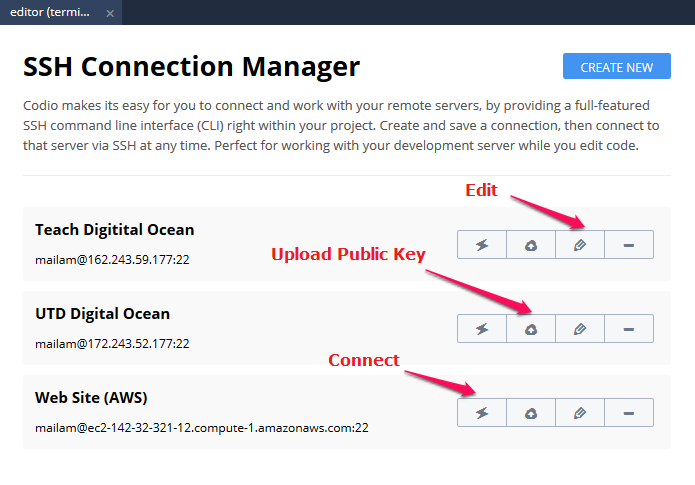
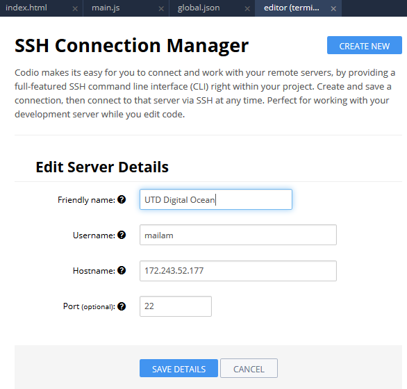
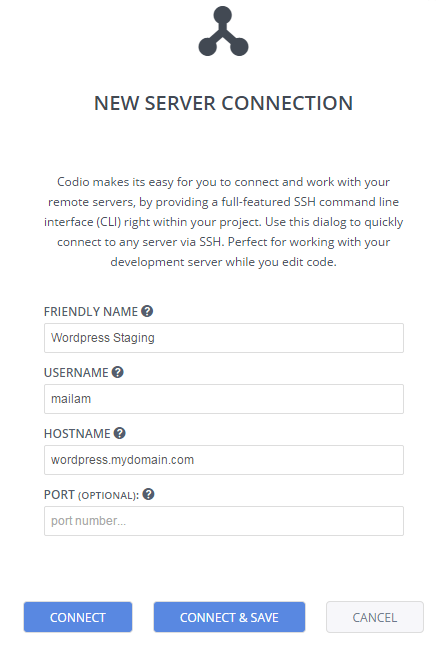

Remote SSH Terminal Access¶
Codio provides the ability to connect to remote servers via SSH. You can open multiple connections and manage connections through the SSH Connection Manager.
A Quick Connect option lets you access remote servers on an ad hoc basis. The SSH Connection Manager lets you store connections for quick access later.
You can do the same things you can do in a regular terminal window, including running text editors like Nano etc.
Copy & Paste operations¶
Behavior varies between Macs and other operating systems. Using the right-click menu should work on all systems.
Mac¶
Copy and paste both works as expected with cmd+c and cmd+v.
Windows, Linux¶
Pasting is done as expected with ctrl+v but copying (ctrl+c) cannot be done as it conflicts with the kill process command, so you should use the right-click menu.
SSH connection manager¶
You can manage your SSH connections by going to the Tools > SSH > Connection Manager menu item. The Connection Manager lists all previously created connections, which you can then connect to or edit.

Creating and Editing Connections¶
Press the Create New button to create a new connection or the pencil icon to edit an existing connection.
You enter the remote server credentials : user name, hostname and optionally port. You can also specify a friendly name that will appear in the connections list.

Public Keys¶
If you want to add your Codio public key to the remote server, press the key icon in the main Connection Manager listing. This saves you from having to upload a public key manually and means you won’t need to enter a password to authenticate.
If you do want to add your public key manually, please refer to the Codio public key documentation.
Making a connection¶
To make a connection, you click on the leftmost icon, which opens the connection in a new tab.
Quick connect¶
The Quick Connect Option (Tools > SSH > Quick Connect) lets you access remote servers on an ad hoc basis. You just enter the remote server credentials : user name, hostname and optionally port.
Specify a friendly name if you want to save the connection details.

If you do not want to install a public key remotely, then Codio will connect to the remote server, which will prompt you for a password.
Connect¶
When you press Connect, a tab will open up in the current panel and off you go. The connection details will not be saved.
Connect & Save¶
This connects but also saves the connection details to the SSH Connection Manager.
Public Keys¶
If you want to add your Codio public key to the remote server, then you should Connect & Save. Then go to the SSH Connection Manager and press the public key button as described above.